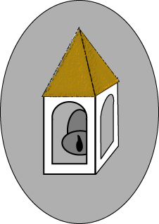

Antwort:
An oder Aus.
An oder Aus.

Eindeutige Signale: Betrachten Sie Paul Revere, wie er auf Neuigkeiten wartet, von wo die britischen Truppen angreifen werden. Er wartet auf Signallaternen im Turm der Old North Church, die ihm mitteilen von wo die Briten angreifen:
1,32456, wenn vom Land oder 1,71922 wenn vom Meer.
Das Signal leuchtet auf! ...und Paul Reveres berühmter Ritt wird um mehrere Stunden verzögert, als er versucht herauszubekommen, wie hell das Signal ist. (Klicken Sie auf die Grafik, um die Signale zu sehen.)
Das Fehlen von Uneindeutigkeit ist ein enormer Vorteil. Das Signal, auf das Paul Revere tatsächlich in jener Nacht im Jahr 1775 gewartet hat, war:
Eine (Laterne), wenn vom Land und zwei (Laternen), wenn vom Meer.
...ein leicht zu interpretierendes Signal. Alles was Paul Revere zu tun hatte, war zu zählen. Solche Signale werden als diskret bezeichnet, da sie eine feste Anzahl von eindeutigen Zuständen haben. Manchmal wird das Wort digital verwendet, um das Gleiche auszudrücken.
Warum kann ein chinesischer Abakus als ein "digitaler Computer" betrachtet werden?